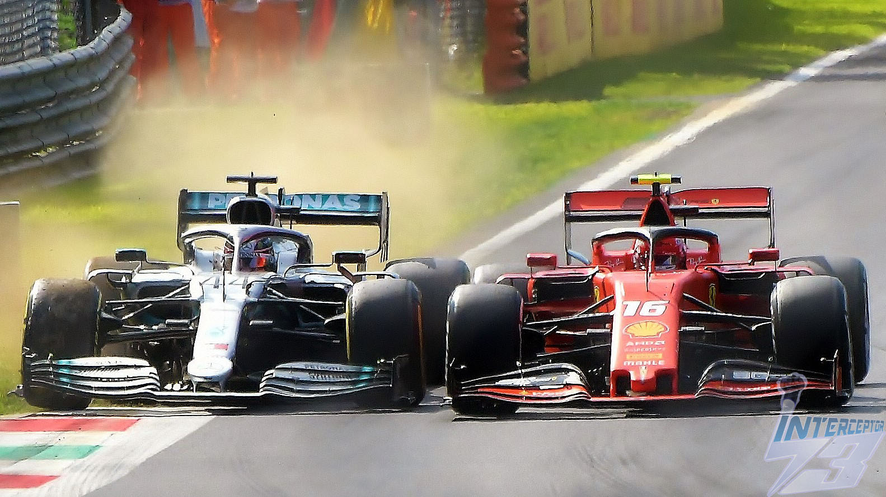

Here is a look at each of the two crashes and what happened. They took place at the same corner, at the same race, on the same date, but the situations around them were very different.
Monza 2020
Leclerc lost control at the Parabolica and slid off into the barriers, ending his race. He was pushing hard at the time and the car got away from him at the fast corner.
The crash happened on lap 24 of the 2020 Italian Grand Prix. Leclerc had just passed the two Alfa Romeos and was trying to make up places, but he was on hard tyres and said he had been struggling for grip. He lost the rear of the car at the Parabolica and hit the tyre barriers at roughly 220 km/h.
The crash caused the first red flag at the Italian Grand Prix since 1995. It also completed a bad day for Ferrari, since his teammate Sebastian Vettel had already retired with a brake failure. After the race, Leclerc took full blame and called the crash his own mistake.

Leclerc in the Ferrari at Monza. Photo: "Charles Leclerc, Ferrari SF90 holds off Lewis Hamilton, 2019 Italian Grand Prix" by Interceptor73, Wikimedia Commons, Creative Commons license.
Monza 2026
Six years later, Leclerc crashed at the exact same corner. Once again he lost the car at high speed at the Parabolica, showing how demanding this part of the track still is.
This time the crash came much earlier, at the end of lap 2 of the 2026 Italian Grand Prix. The opening laps were chaotic: Leclerc had pushed his own teammate, Lewis Hamilton, wide into the gravel at the first chicane, then was passed by Max Verstappen and came under attack from Oscar Piastri. On the exit of the Parabolica, his Ferrari SF-26 snapped sideways under acceleration and hit the tyre barrier at around 160 mph.
The race was red-flagged for about 30 minutes while the barrier was repaired. Leclerc walked away, but he later said the impact briefly affected the vision in his right eye and that he needed extra medical checks before the next race. Unlike in 2020, he suggested the car's power delivery had felt unusual at the Parabolica just before the crash, and the cause was still being investigated.
Leclerc in the 2026 Ferrari SF-26. Photo: "Ferrari SF-26 - Charles Leclerc approaches Spoon Curve at Suzuka during the 2026 Japanese GP," Wikimedia Commons, Creative Commons license.
What makes these two crashes interesting is that they happened at the same place, six years apart. That raises the question of whether they went wrong for the same reasons, which the next page looks at using data.
On the surface, they look alike: both times the car stepped out on the exit of the corner while Leclerc was fighting for position. But the explanations are different. In 2020, Leclerc blamed himself and a lack of grip from his tyres. In 2026, he pointed to the way the car delivered its power. The data can help test which explanation fits each crash.